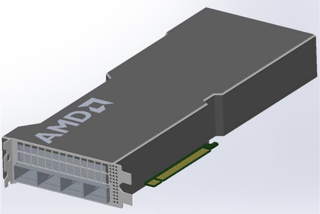
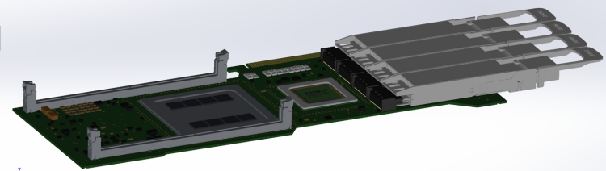
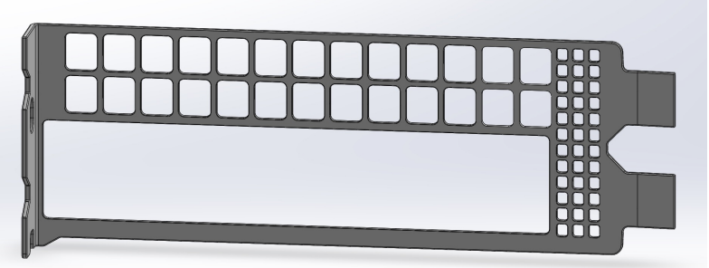
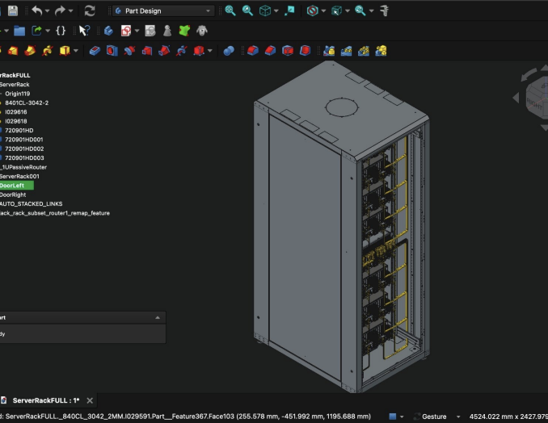
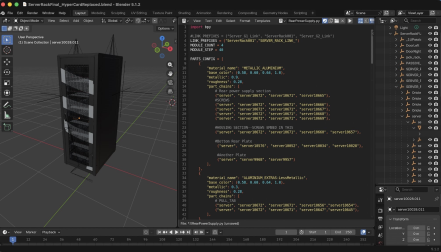
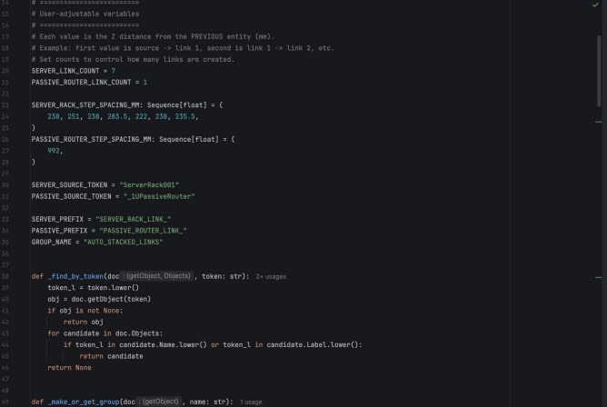
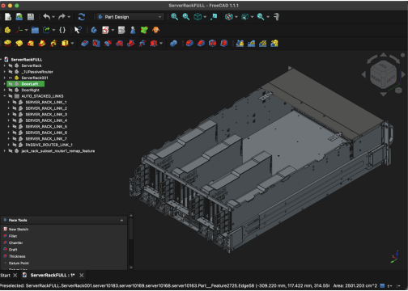
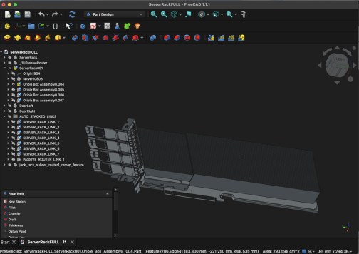
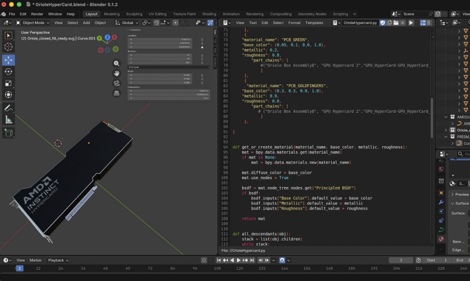

CAD & Rendering
Extensive use in Solidworks, AI assisted Python Scripting in FreeCAD and Blender to generate high quality 3D models and renderings. Some of my projects have included GPU cards, server rack, and passive router designs.
Recently, I worked on generating automated engineering workflows using PyCharm & GitHub Copilot alongside open-source engineering software such as FreeCAD, Blender, or even the multiphysics solvers, Elmer and CalculiX. These workflows run software headlessly (no manual interact with GUI), generate fully parametric CAD models, and perform automated geometry/QA checks.
Examples to come soon








